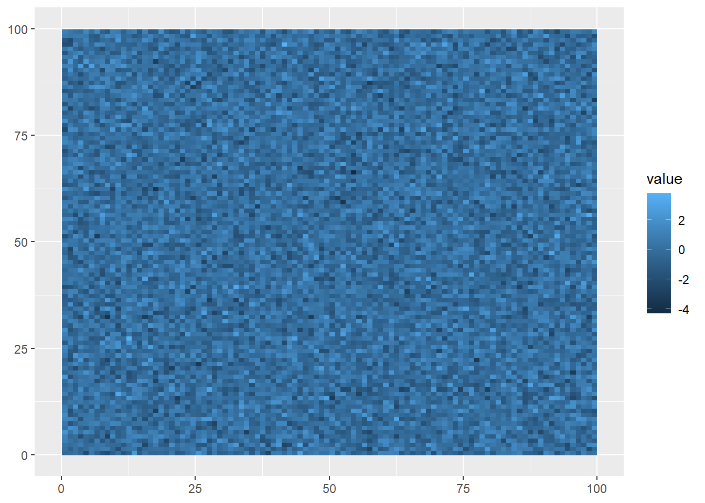
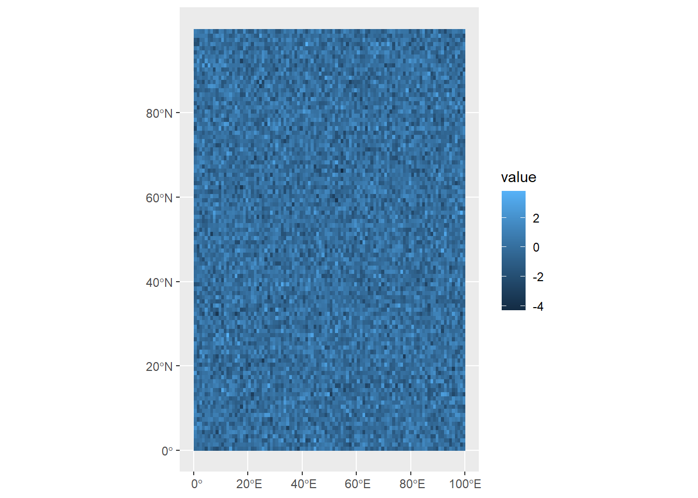
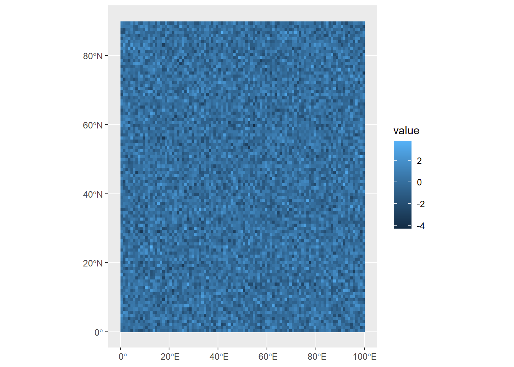
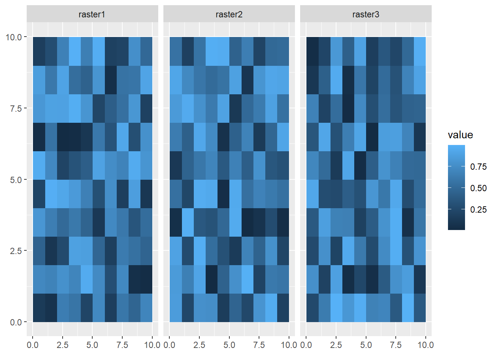
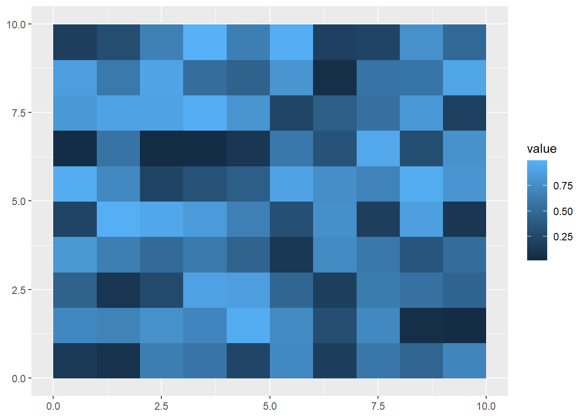
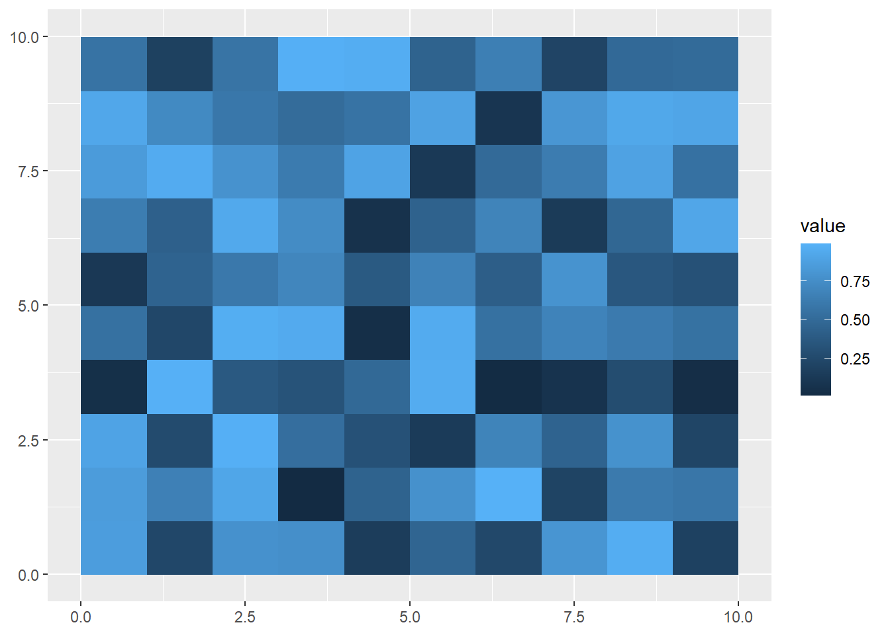
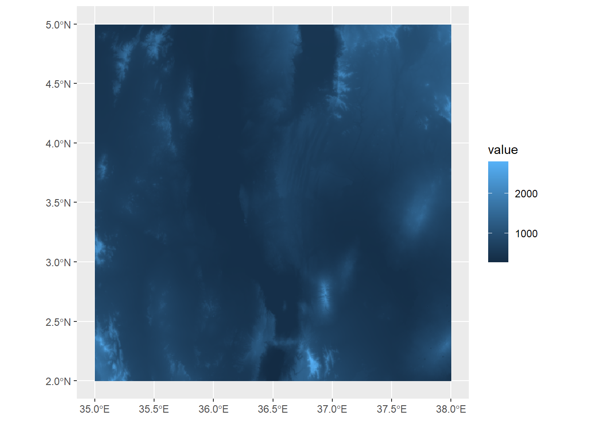

Warning: package 'terra' was built under R version 4.4.2Warning: package 'tidyterra' was built under R version 4.4.2Warning: package 'terra' was built under R version 4.4.2Warning: package 'tidyterra' was built under R version 4.4.2The terra package is used to deal with spatial data, but specifically with rasters. A major advantage of this package is its ability to work with large datasets. Rasters can include a lot of data; for example, a single coverage of a 5 km2 area at a 1m resolution contains 25 million grid cells. The terra package makes handling data at these volumes more manageable.
A raster is closely related to another object called a matrix, which is a rectangular array of numbers. They are used in mathematics for mapping relationships between linear systems, and serve a number of functions in computer science. For our purposes, we can think of them like a table without headers, where the column and row numbers are equivalent to x position and y position at a given spatial interval (e.g., a column/row for every 50 m easting/northing or every 0.1° longitude/latitude). Every cell or pixel in that headerless table contains a value that is a measurement of some variable at those x-y coordinates (e.g., temperature, elevation, etc.)

To show how this works, we’re going to dip back into Base R for a moment. First, let’s use rnorm to generate a set of 10,000 random values, normally distributed around a mean of 0 and with a standard deviation of 1.
#Generate 10000 random values
randomValues<-rnorm(10000,0,1)
randomValues[1:10] [1] 1.0348366 0.6522640 -1.4540501 -2.0085542 0.4887037 -1.4854700
[7] 0.7758884 -0.7053838 1.0892177 -0.8190491Here, we’re using square brackets to look at the first ten of these random values. Now let’s say we want to take this and turn it into a matrix with 100 rows and 100 columns. We can use our randomValues as an argument in the matrix function, along with arguments for the number of rows (nrow) and columns (ncol):
#Generate 10000 random values in a 10x10 matrix
randomMatrix<-matrix(randomValues,nrow=100,ncol=100)
#Show first ten rows of first five columns
randomMatrix[1:10,1:5] [,1] [,2] [,3] [,4] [,5]
[1,] 1.0348366 0.5905468 0.1299541283 -0.04448339 1.4289052
[2,] 0.6522640 0.5275579 0.6877795489 0.72987128 0.6440253
[3,] -1.4540501 -2.1890450 0.0002318932 0.03166149 1.1696872
[4,] -2.0085542 -1.9382868 1.1633936558 -0.25911973 0.6870340
[5,] 0.4887037 1.3665376 -0.4592813435 -1.23227965 -0.1163580
[6,] -1.4854700 0.2924812 0.8792707122 1.56490429 -0.3817497
[7,] 0.7758884 0.5098766 1.9091407424 -1.08489408 0.5957195
[8,] -0.7053838 2.2968982 -0.3270155508 -1.04935891 2.3419402
[9,] 1.0892177 1.0718190 -0.1938226216 2.57012379 -1.0769093
[10,] -0.8190491 1.9115245 -0.7221258214 0.06197989 1.1506261This gives us a sense of what the matrix looks like: the far left shows row numbers, while the top has column numbers, both in square brackets. The numbers in between are the random values we generated, but now organized in a 100 x 100 matrix. We can see how many rows and columns are in the matrix using the dim function:
dim(randomMatrix)[1] 100 100OK, now that we have data, we want to turn it into a raster.
#Turn matrix into SpatRaster object
randomRaster<-rast(randomMatrix)
randomRasterclass : SpatRaster
dimensions : 100, 100, 1 (nrow, ncol, nlyr)
resolution : 1, 1 (x, y)
extent : 0, 100, 0, 100 (xmin, xmax, ymin, ymax)
coord. ref. :
source(s) : memory
name : lyr.1
min value : -4.298846
max value : 3.781577 This gives us some information about the spatRaster object, including:
dimensions (100 rows, 100 columns, 1 layer)
resolution (the size of a single cell, here 1x1)
extent (like a bounding box, giving the maximum and minimum x and y values)
coord. ref (CRS, not yet defined here)
name of the variable (lyr.1 by default since we didn’t specify), and the minimum and maximum values.
One of these properties worth mentioning is resolution, which is the size of a grid cell. Grids with smaller cells are better resolved, but this comes at a computational cost of recording, storing, and manipulating much more data. Anyone dealing with raster data must therefore make choices about what resolution is necessary for their purposes, and anyone later using that data must account for the resolution of the data.
If we want to visualize these using ggplot2, we need an appropriate geom. The geom_spatraster function comes from tidyterra, which is built to simplify interactionse between terra and tidyverse:
ggplot()+
geom_spatraster(data=randomRaster)
The syntax is very similar to what we saw with geom_sf, but this visualization shows what raster data looks like: gridded cells where the x and y position of each cell is determined by its column and row number, and its color is based on the value assigned at that position. Of course, being randomly generated data, it doesn’t show a pattern.
Right now, our random data are distributed in an abstract 100x100 coordinate space. If we want to make our data useful for understanding the world, we need to use coordinates based on a reference system. Like sf objects, spatRaster objects also need a CRS to do this.
The crs function lets us do this; however, it requires a character value rather than a number. We can still use the EPSG codes we learned about last week, but this just needs to be preceded by epsg: and put into quotation marks, like so:
crs(randomRaster) <- "epsg:4326"
randomRasterclass : SpatRaster
dimensions : 100, 100, 1 (nrow, ncol, nlyr)
resolution : 1, 1 (x, y)
extent : 0, 100, 0, 100 (xmin, xmax, ymin, ymax)
coord. ref. : lon/lat WGS 84 (EPSG:4326)
source(s) : memory
name : lyr.1
min value : -4.298846
max value : 3.781577 Now, you might be rightly asking here “Why does crs under terra require it to be "epsg:4326" while st_crs from the sf package only needs it to be 4326?!” By now, you’ve seen many differences in the way that functions/arguments are structured, and this lack of uniformity can be frustrating to new users.
The answer to this question lies in the way that R packages are developed. While Base R is maintained by a core group of developers, the software is open-source, and packages are usually built by other individuals or groups who want to use R for a specific application (such as spatial data analysis). They create their own functions in R to suit these needs, and may release them to the wider public, which is the case with both sf and terra.
This process of public development allows R to grow organically to serve an ever expanding base of users and work for a diversity of applications. But it also means that while packages have to adhere to the rules of the R programming language, other conventions, such as what kinds of inputs an argument requires, may vary from package to package. If you’re ever unsure about what the arguments need to look like, the R help can provide you with more information, particularly the examples at the bottom of each help page.
Coming back to our random raster with a CRS, when we plot the data, the coordinates (position in the matrix) are given as degrees longitude and latitude:
ggplot()+
geom_spatraster(data=randomRaster)
Try and run through the example above again, but when you create the randomValues vector, use the sort function to sort the values from least to greatest. What do you think will happen?
You might have noticed that our raster includes latitude values that go above 90°N. When we first defined the raster, we set it up to have a resolution of 100 x 100 cells, but we didn’t define the units. Then later, when we then gave it a CRS, we didn’t bother to check whether all of our longitude/latitude values make sense.
If we know, for example, that the coordinate space only goes up to 90°N, we can set this extent using the ext function.
ext(randomRaster) <- c(0, 100, 0, 90)
randomRasterclass : SpatRaster
dimensions : 100, 100, 1 (nrow, ncol, nlyr)
resolution : 1, 0.9 (x, y)
extent : 0, 100, 0, 90 (xmin, xmax, ymin, ymax)
coord. ref. : lon/lat WGS 84 (EPSG:4326)
source(s) : memory
name : lyr.1
min value : -4.298846
max value : 3.781577 This is telling R: the extent of the randomRaster object within the WGS 84 coordinate reference system is 0 - 100 along the x-axis (longitude), and 0 - 90 along the y-axis (latitude). This reconfigures the data to fit that space, not by deleting the data outside that extent, but changing the resolution of the y-axis. You can see this now in the resolution section of the information above, which shows that grid cells are now 1º wide on x axis (longitude), and 0.9º tall on the y-axis. In other words, our grid cells are no longer squares, but slightly squat rectangles.
Now when we plot the, we can see that it now fits within that space:
ggplot()+
geom_spatraster(data=randomRaster)
In this case, since the data are invented, it isn’t a big deal to make this kind of change. But whenever we mess around with the extents or resolutions, we need to be aware of what our CRS is, and how the data are recorded, to make sure that the data remain faithful to the phenomena they represent.
A single raster is really useful if you’re looking at a single variable from a given snapshot in time (average temperature for a given day), or at some variable that doesn’t tend to change much over time (like elevation). For data that varies over time, we can use structures called multirasters: these are raster datasets with multiple layers. These can be useful for storing different kinds of data within the same spatRaster object, or storing raster data that’s been collected over time.
To make one of these from scaratch, we’ll generate three random rasters, and then combine them just as we would a vector:
#Generate 100 random values in a 10x10 matrix
randomValues1<-matrix(runif(100,0,1),nrow=10,ncol=10)
randomValues2<-matrix(runif(100,0,1),nrow=10,ncol=10)
randomValues3<-matrix(runif(100,0,1),nrow=10,ncol=10)
raster1<-rast(randomValues1)
raster2<-rast(randomValues2)
raster3<-rast(randomValues3)
multiRaster<-c(raster1,raster2,raster3)We can see how many layers are in this dataset using the nlyr function:
nlyr(multiRaster)[1] 3When we look at this data, though, each raster in the set has the same default name:
multiRasterclass : SpatRaster
dimensions : 10, 10, 3 (nrow, ncol, nlyr)
resolution : 1, 1 (x, y)
extent : 0, 10, 0, 10 (xmin, xmax, ymin, ymax)
coord. ref. :
source(s) : memory
names : lyr.1, lyr.1, lyr.1
min values : 0.01464499, 0.007207026, 0.01490451
max values : 0.99317883, 0.989193002, 0.99908353 We can access layer names using the names function, and assign a vector of layer names as character values:
names(multiRaster)<-c("raster1","raster2","raster3")
multiRasterclass : SpatRaster
dimensions : 10, 10, 3 (nrow, ncol, nlyr)
resolution : 1, 1 (x, y)
extent : 0, 10, 0, 10 (xmin, xmax, ymin, ymax)
coord. ref. :
source(s) : memory
names : raster1, raster2, raster3
min values : 0.01464499, 0.007207026, 0.01490451
max values : 0.99317883, 0.989193002, 0.99908353 Visualizing all the layers here requires us to use the facet_wrap function, and the argument we use is ~lyr. This is accessing the lyr (layer) property of the spatRaster object.
ggplot() +
geom_spatraster(data = multiRaster) +
facet_wrap(~lyr)
If you want to extract a single raster from this set, you can use the $ operator:
firstRaster<-multiRaster$raster1
ggplot() +
geom_spatraster(data = firstRaster)
Or you can you use square brackets:
secondRaster<-multiRaster['raster2']
ggplot() +
geom_spatraster(data = secondRaster)
While building rasters from scratch helps us understand the object’s properties, most uses in data science will involve loading in raster data from a file. Raster data can be read into R from a number of different file formats (check here for a full list), but generally speaking most common image formats (e.g., .jpg, .bmp, .img) can be read as rasters. One of the most common formats used to store raster data is a GeoTIFF (.tif) file.
turkanaDEM<-rast("data/turkanaDEM.tif")
turkanaDEMclass : SpatRaster
dimensions : 720, 720, 1 (nrow, ncol, nlyr)
resolution : 0.004166667, 0.004166667 (x, y)
extent : 35, 38, 2, 5 (xmin, xmax, ymin, ymax)
coord. ref. : lon/lat WGS 84 (EPSG:4326)
source : turkanaDEM.tif
name : turkanaDEM This is surface elevation data, both bathymetric and topographic, from the GEBCO Gridded Bathymetry dataset hosted by the British Oceanographic Data Centre. It is centered on the area on the eastern shore of Lake Turkana in Kenya. Like the data we created, we can see the properties of this dataset like its extent and resolution. Plotting is also the same as above using geom_spatraster:
ggplot() +
geom_spatraster(data=turkanaDEM)
Here, we can see the elevation values mapped out, with a few peaks extending over 2000 meters a.s.l.
Multilayer rasters can also be stored as GeoTIFFs, and satellite images are often stored this way and include multiple layers for different color bands. Another common standard used in the earth sciences for multilayer rasters is a NetCDF (.nc) file. Here, we’ll load in a NetCDF of monthly rainfall values for the Lake Turkana area, obtained from the TerraClimate dataset (no relation to the terra package) from the Climatology Lab at UC Merced.
turkanaRain<-rast("data/turkanaRain.nc")
turkanaRainclass : SpatRaster
dimensions : 72, 72, 756 (nrow, ncol, nlyr)
resolution : 0.04166667, 0.04166667 (x, y)
extent : 35, 38, 2, 5 (xmin, xmax, ymin, ymax)
coord. ref. : lon/lat WGS 84 (EPSG:4326)
source : turkanaRain.nc
names : turka~ain_1, turka~ain_2, turka~ain_3, turka~ain_4, turka~ain_5, turka~ain_6, ... And we can check the number of layers:
nlyr(turkanaRain)[1] 756Multilayer rasters can also be subset using the select function (thanks to tidyterra!):
turkanaRain4<-select(turkanaRain,c('turkanaRain_1':'turkanaRain_4'))
turkanaRain4class : SpatRaster
dimensions : 72, 72, 4 (nrow, ncol, nlyr)
resolution : 0.04166667, 0.04166667 (x, y)
extent : 35, 38, 2, 5 (xmin, xmax, ymin, ymax)
coord. ref. : lon/lat WGS 84 (EPSG:4326)
source : turkanaRain.nc
names : turkanaRain_1, turkanaRain_2, turkanaRain_3, turkanaRain_4